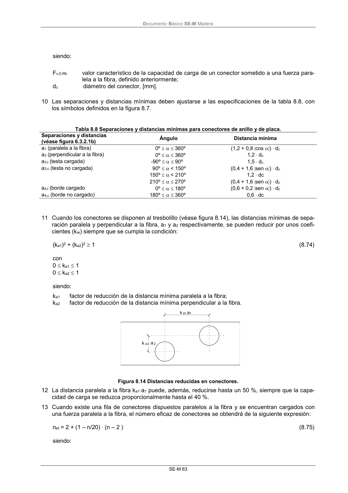

DB-SE-M · Página 69 · versión 2019-12-20
SHA256: 26b5819839ebfda78b0b119c5e76a0a37773b0d763c05688541870075df93718 · página física 69 de 132 · métodos de encabezado
solo si están cotejados.
Formatos: Markdown · JSON de bloques · PDF p. 69 · imagen PNG
Documento Básico SE-M Madera
SE-M 63
siendo:
Fv,0,Rk
valor característico de la capacidad de carga de un conector sometido a una fuerza para-
lela a la fibra, definido anteriormente;
dc
diámetro del conector, [mm].
10 Las separaciones y distancias mínimas deben ajustarse a las especificaciones de la tabla 8.8, con
los símbolos definidos en la figura 8.7.
Tabla 8.8 Separaciones y distancias mínimas para conectores de anillo y de placa.
Separaciones y distancias
(véase figura 6.3.2.1b)
Ángulo
Distancia mínima
a1 (paralela a la fibra)
0º 360º
(1,2 + 0,8 cos ) dc
a2 (perpendicular a la fibra)
0º 360º
1,2 dc
a3,t (testa cargada)
-90º 90º
1,5 dc
a3,c (testa no cargada)
90º < 150º
(0,4 + 1,6 sen ) dc
150º < 210º
1,2 dc
210º 270º
(0,4 + 1,6 sen ) dc
a4,t (borde cargado
0º 180º
(0,6 + 0,2 sen ) dc
a4,c (borde no cargado)
180º 360º
0,6 dc
11 Cuando los conectores se disponen al tresbolillo (véase figura 8.14), las distancias mínimas de sepa-
ración paralela y perpendicular a la fibra, a1 y a2 respectivamente, se pueden reducir por unos coefi-
cientes (kai) siempre que se cumpla la condición:
(ka1)2 + (ka2)2 1
(8.74)
con
0 ka1 1
0 ka2 1
siendo:
ka1
factor de reducción de la distancia mínima paralela a la fibra;
ka2
factor de reducción de la distancia mínima perpendicular a la fibra.
Figura 8.14 Distancias reducidas en conectores.
12 La distancia paralela a la fibra ka1a1 puede, además, reducirse hasta un 50 %, siempre que la capa-
cidad de carga se reduzca proporcionalmente hasta el 40 %.
13 Cuando existe una fila de conectores dispuestos paralelos a la fibra y se encuentran cargados con
una fuerza paralela a la fibra, el número eficaz de conectores se obtendrá de la siguiente expresión:
nef = 2 + (1 – n/20) (n – 2 )
(8.75)
siendo:
